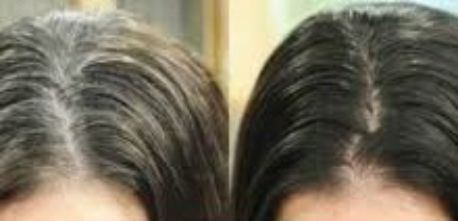
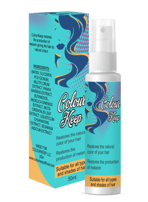
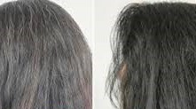
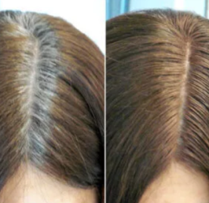
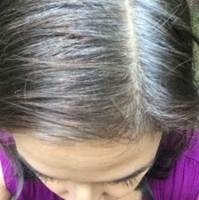

In no less than three weeks I did away with my gray hair, and hair color was restored. A recipe that I am glad to share with whoever is interested.
I remember I talked about finding a gray hair on my head at some point. I wasn’t at all comfortable with it but I found consolation in the fact that I couldn’t avoid it at my age. But recently the gray hair had taken over almost half of my head, it was worrisome.
I booked appointments with a doctor who all he had to say was “I’m 56 and it"s expected that I have gray hair and there was nothing he could do to assist me”
So I thought to myself, guess I’m going to start applying dye on my hair! And as one who had never applied dye on my hair ever before, it was quite the challenge trying to understand what I wanted from a lot of hair color products out there. So many there are, each which its different effects, some of which don’t even cover gray hair. And I was well aware of the fact that even if I applied a dye with the best quality, I would need to repeat to the procedure in about two to three weeks as a non-fan of the gray hair.
Still trying to make a decision, I went on the internet in search of some reviews. As I kept on with my search through the millions of forums and advertisements, I came across websites for an innovative product that promise hair color restoration. Take note that this isn’t a dye, but rather a special type of hairspray that supposedly promotes a production of melanin, which is a substance behind the natural pigmentation of the hair. When gray hair starts to surface, it is due to lack of melanin in the roots of the hair.
So instead of applying dye that could end up ruining my hair structure I opted to make an order that spray. for the spray. At the time of the order, they had a discount for it and the price, very affordable.
In a weeks’ time I received my order;
I was quite consistent with the usage, making use of it on the second day after I wash my hair, I would spray it all over my hair as it was starting to dry and then finish up with styling the hair the normal way I did.
The first week passed and I didn’t see any effect. I wasn’t bothered, I mean it"s only the first week, it would take some time I thought, knowing that it wasn’t any type of dye. To my greatest surprise, in the second week I noticed that the roots of my hair appeared much darker, like about a quarter of the hair was dark and the rest of it still gray. It appeared as if the color was slowly spreading through the hair. In a month’s time, I got my original chestnut hair color back.
All it took was one month, two bottles of the spray and I am glad I used it! I can look in the mirror and find it hard to believe that I am 56 years of age. Take a look, do I look 56?
I would advise the ladies not to be in a hurry to use dyes, if you see that you are developing grey hair and are not ok with it, then try the spray ! In my opinion, I think it would work a lot faster during the early stages because in my case I had quite a lot of damage already. I still think it would work out too for a completely covered gray hair, the difference is it might take longer.
The name of the spray is Colour Keep, it can be ordered online from the official supplier’s website.
If there is anyone who has had an experience using that spray, please share! We would like to know if it worked out for you as it did for me.
Wishing you all the best, Stay healthy, young and beautiful!!!
 CHECK PRICES
Discussion: 8 comments
Laura
Hi Everyone that spray is the real deal, I must confess!! Check out my results”
Angeli
“Wow, why didn’t they make this earlier? Damaged my hair so much by applying dye for a year. Well, I have to try and restore it now that I know about this spray”
Pia
“At least you are 56, I am just 25 and my hair is filled with gray hair. I am really happy I came across your post. I already placed an order for 3 bottles, don’t want to end up looking like a granny at 25”
Maria
“Pia, take is easy, I was also affected by gray hair at just 27. It is caused by some deficiency of melanin in your hair, the spray can actually fix that.”
Jellica
“Just wondering if I can go ahead and use that spray as a preventative measure because I think I will die if I spot any traces of gray hair on my head.”
Rosa
“This is nice, going to place an order for my mom…. Her hair was so beautiful and I really hope this spray works for her”
Tes
“Guys, that spray is our salvation!!!!!!!!!”
Kate
“I ordered Colour Keep, it was really helpful. I am so happy!!! Thank you so much.”